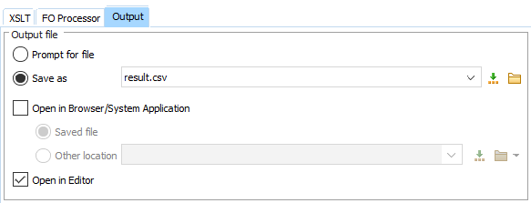
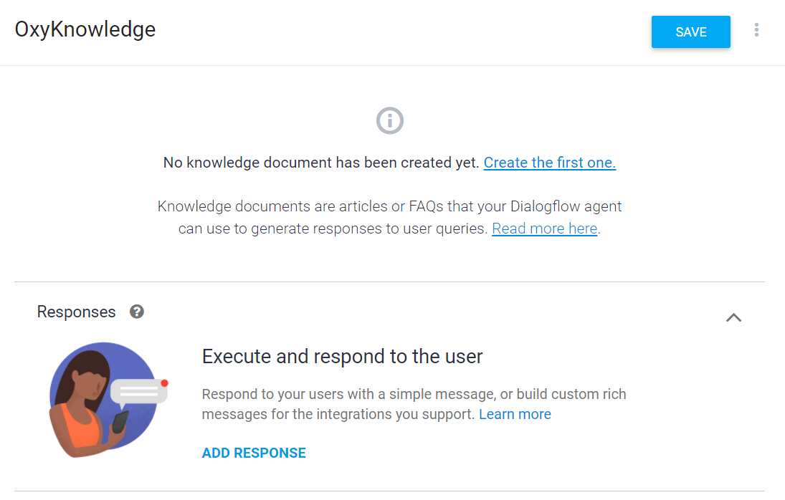
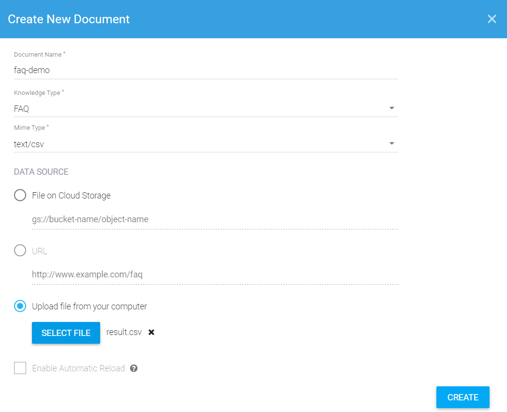
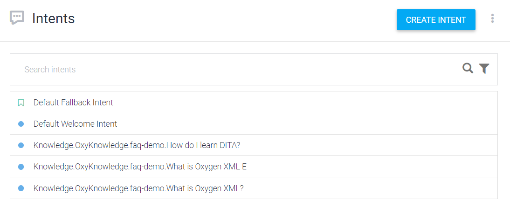
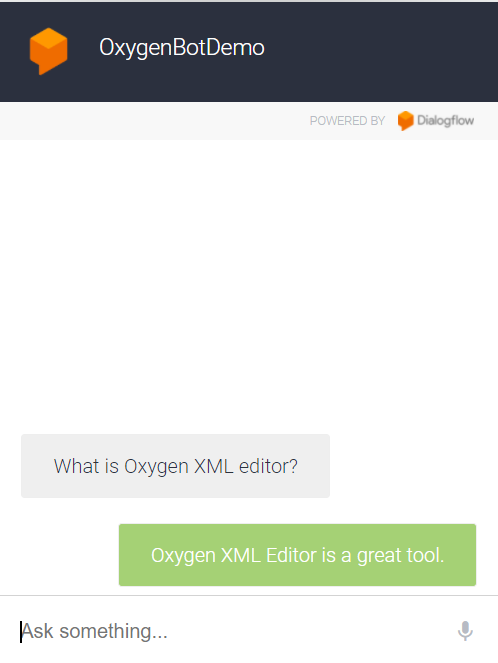

Creating a Knowledge Base for the Google Dialogflow Chatbot using DITA XML content
A Chatbot is a computer program that simulates human conversation through voice commands or text chats or both. Chatbot (short for chatterbot), is an artificial intelligence (AI) feature that can be embedded and used through any major messaging application. Chatbots helps add convenience for customers, they are automated programs that interact with customers like a human would, and cost little to nothing to engage with.
Suppose you have a simple DITA topic that contains pairs of questions and answers placed as rows in a table:
<?xml version="1.0" encoding="UTF-8"?> <!DOCTYPE topic PUBLIC "-//OASIS//DTD DITA Topic//EN" "topic.dtd"> <topic id="frequently_asked_questions"> <title>Frequently Asked Questions</title> <body> <p> <table frame="all" rowsep="1" colsep="1" id="table_bkf_4dl_vsb"> <tgroup cols="2"> <colspec colname="c1" colnum="1" colwidth="1*"/> <colspec colname="c2" colnum="2" colwidth="1*"/> <tbody> <row> <entry> <p>What is Oxygen XML Editor?</p> <p>What is Oxygen XML?</p> </entry> <entry> <p>Oxygen XML Editor is a great tool.</p> </entry> </row> <row> <entry>How do I learn DITA?</entry> <entry>You can read the "Oxygen" user's guide, and the Oxygen XML Blog.</entry> </row> </tbody> </tgroup> </table> </p> </body> </topic>
We can use the following XSLT stylesheet to extract the training data as a CSV file from the XML content:
<?xml version="1.0" encoding="UTF-8"?> <xsl:stylesheet xmlns:xsl="http://www.w3.org/1999/XSL/Transform" xmlns:xs="http://www.w3.org/2001/XMLSchema" exclude-result-prefixes="xs" version="2.0" xmlns:oxy="abc"> <xsl:output method="text"/> <xsl:template match="/"> <xsl:text>Question,Answer </xsl:text> <xsl:for-each select="//tbody/row"> <xsl:for-each select="entry[1]"> <xsl:choose> <xsl:when test="p"> <xsl:for-each select="p"> <xsl:value-of select="oxy:escapeForCSV(normalize-space(.))"/>,<xsl:value-of select="oxy:escapeForCSV(normalize-space(string-join(../../entry[2]//text(), '')))"/><xsl:text> </xsl:text> </xsl:for-each> </xsl:when> <xsl:otherwise> <xsl:value-of select="oxy:escapeForCSV(normalize-space(.))"/>,<xsl:value-of select="oxy:escapeForCSV(normalize-space(string-join(../entry[2]//text(), '')))"/><xsl:text> </xsl:text> </xsl:otherwise> </xsl:choose> </xsl:for-each> </xsl:for-each> </xsl:template> <xsl:function name="oxy:escapeForCSV"> <xsl:param name="value"/> <xsl:value-of select="replace(replace($value, '"', '""'), ',', '","')"/> </xsl:function> </xsl:stylesheet>
Create a transformation scenario using these 2 files. Save the output to a CSV file, as in the picture below:

What is Oxygen XML Editor?,Oxygen XML Editor is a great tool.
What is Oxygen XML?,Oxygen XML Editor is a great tool.
How do I learn DITA?,You can read the ""Oxygen"" user's guide"," and the Oxygen XML Blog.The structure of the CSV file contains a table with 2 columns, where the first column represents the question and the second column the answer, separated by a comma. In general, a line is in the form: "Question, Answer". One limitation is that each question can have only one answer. For the same answer to be suitable for several questions, you can copy it in the columns corresponding to the questions.
- Create an account on https://dialogflow.cloud.google.com/.
- Create a new agent and complete the required fields:

- In Settings, enable BETA FEATURES.

- Go to , enter a name for this knowledge base, and click the SAVE
button.

- Use the CSV document for training. For this: Press Create the first
one and complete the fields. Select the Update file
from your computer option and select the desired file. Click the
CREATE button.

The document will be registered in the knowledge base, as in the image below:

-
Convert questions and answers into intents.
Click the View link from the image above. Check all questions that need to be converted to intents. Click the CONVERT TO INTENTS button.

Now, when you click on Intents, the converted questions should appear:

-
Do a simulation. Click , and if the demo feature is disabled, enable it.

- Integrate the Chatbot in your HTML Content. Go to the
Dialogflow
Integrations page, click the Web
Demo integration and you will get an
<iframe>HTML element which can be pasted in your HTML page. Using a WebHelp customization you can also integrate the Chatbot in the footer for each generated HTML page.
This was a basic way to show how a chatbot can be trained with intents and answers by using a DITA topic to produce a comma-separated value file.